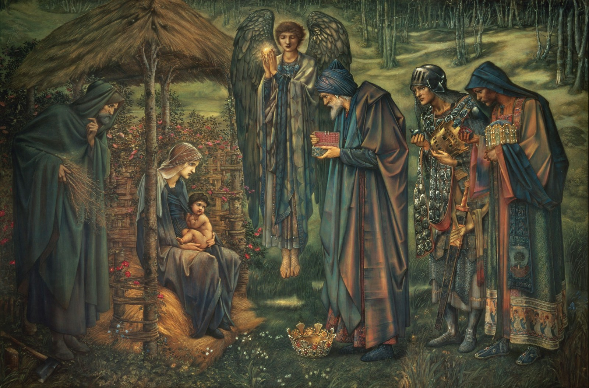
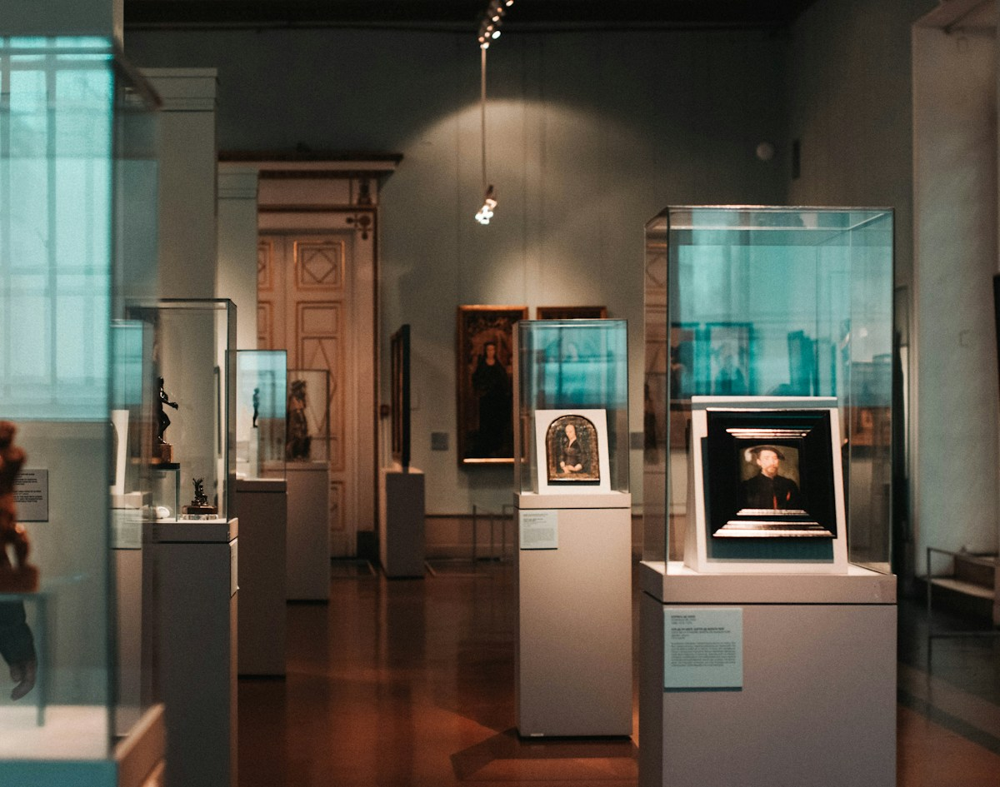

Ana
Integrante da equipe
Quem fez este projeto
Este site é um convite para conhecer a alegoria de Platão e conversar sobre as ideias que ela desperta.

Ana, Marcela e Larissa assinam este trabalho sobre a caverna, as sombras e a busca pelo conhecimento.
Integrante da equipe
Integrante da equipe
Integrante da equipe

O mito da caverna faz parte de A República, obra em que Platão investiga justiça, conhecimento e a vida em sociedade. Aqui, reunimos uma introdução à narrativa e algumas chaves para pensar seus símbolos.
Mais do que oferecer respostas prontas, o projeto propõe uma pausa para observar as ideias que costumamos aceitar sem perguntar de onde vieram.
Voltar à alegoria